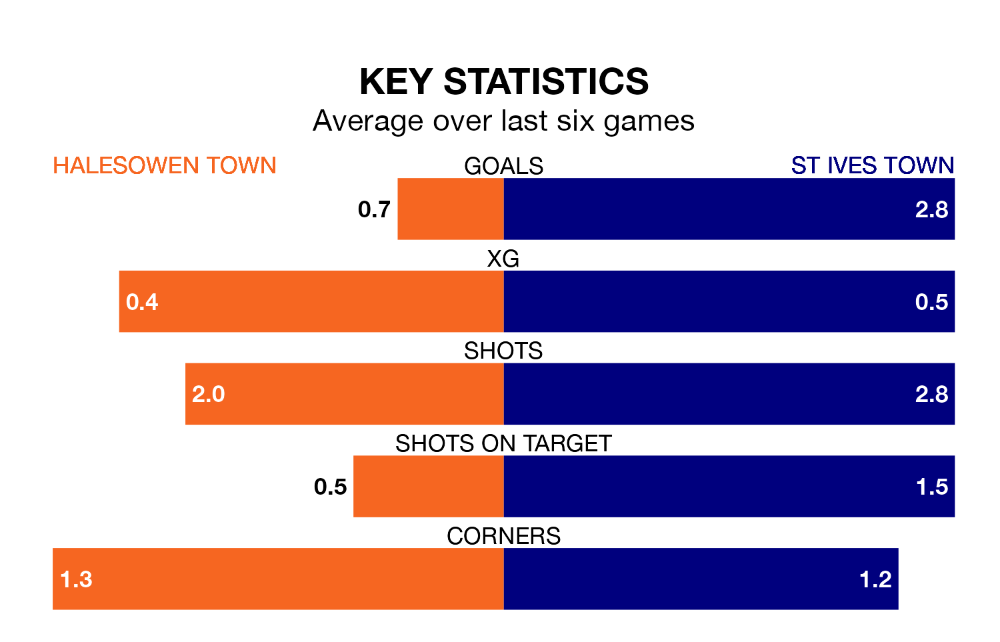

St Ives Town travel to Halesowen Town on Saturday in the Southern League Premier Central.
The visitors come into the game on the back of a win in their last match, having beaten Barwell 4-3 away.
Halesowen also won their last match, 1-0 against Alvechurch.
With 81 goals in 39 games so far this season, St Ives are the league's highest scorers with 2.1 goals per game. But they are conceding more than average too, letting in 65 goals at a rate of 1.7 per game.
Halesowen, meanwhile, are below average scorers, with 1.3 goals per game, compared to a league average of 1.5. They have also conceded 1.3 goals per game.
Halesowen Town are in mixed form in the Southern League Premier Central, with three wins and three losses from their last six games.
With four wins and a draw over that period, St Ives Town's form is better – they have taken 13 points from 18, compared to the hosts' nine.
The away team are eighth in the table after 39 games, of which they have won 18 and drawn four, earning 58 points.
Halesowen are four places behind St Ives in 12th, with 14 wins and eight draws putting them on 50 points.
Updated: 14:47 (UTC), 09/04/24